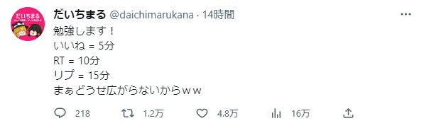

なんだこれ？！
なんかすごいかも?!
DLしようかな...
とおもったそこのあなた！！
このサイトを見ているということは上の画像のようなことをやっているということですね?!(?)
まぁ軽く説明します！
Twitterとかでちょくちょくある
ってやつの合計時間タイマーだと思っていただければOKです！
もちろんTwitterのいいね、RT、リプに特化しているので使いやすいと思います！
ダウンロードはこのページの一番下から！
システム要件
| x | 推奨動作環境 | 最低動作環境 |
|---|---|---|
| ディスプレイ | 1920x1080 | 1280x720 |
| 空き容量 | 1MB | 1MB |
| Windowsバージョン | Windows 10/Windows 11 | Windows XP SP3 |
ソフトを使うに当たっての注意
実行は自己責任でお願いします。
これはさるね様のソフトの改造版です。改造の際はライセンスにご注意ください。
古いWindows OSでの動作は保証いたしません。
商用、非商用問わず0円でご利用いただけます。
公序良俗に反する、犯罪を助長させるような使い方はお控えください。
どのような場合でも、だいちまるは一切保証いたしません。
ほかに何かございましたらTwitterのDMかDiscordのDMかメールでご連絡ください。
iOS,Linux,mac OS,Android OSなどのWindows OS以外の端末での動作は保証いたしません。
ご利用の方はzipファイル同梱、readme.txtを必ずお読みください。
改造、二次配布はさるね様のクレジット表示を残した上でOKです。
だいちまるのTwitterさるねさんのTwitter
ダウンロードはこちら
ダウンロードはこちらから～
だいちまる式 Twimer
バージョン 5.0.0
だいちまる式
バージョン 5.0.0
さるね式 Twimer
バージョン 1.0.0
さるね式
©2022 - 2024 daichimarukana
バージョン 1.0.0